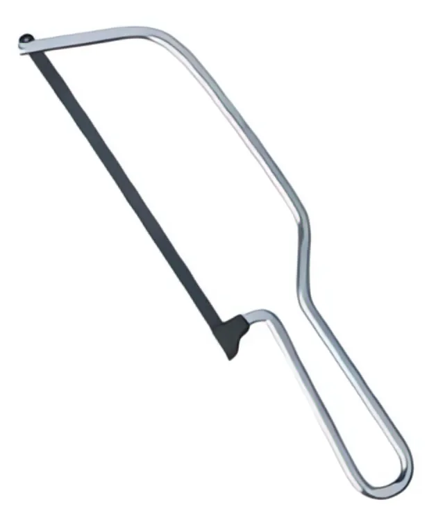

GROZ · Hacksaw Frames & Blades
Junior Saw Frames
CAT NR JHF/4PD · ORD NR 30130
| CAT NR (catalogue number) | JHF/4PD |
|---|---|
| ORD NR (order number) | 30130 |
| Box quantity | 200 |
| Depth of bow (h) (inch) | 2-3/8 |
| Depth of bow (h) (mm) | 60 |
| Frame | Blue |
| Height (H) (inch) | 2-3/4 |
| Height (H) (mm) | 70 |
| Overall length (inch) | 9-7/16 |
| Overall length (mm) | 240 |
| Table section | JUNIOR SAW FRAME — POWDER COATED |
Ask for a quote The catalogue PDF, page 80
“Ask for a quote” opens this product in the catalogue: add it to your quote and send it. Buyers from Africa, the Gulf and worldwide are welcome; prices in USD, EUR or INR.
From the GROZ Workshop Tools CB-05 catalogue. Not yet verified: these details were read from the printed catalogue automatically; check the catalogue page before ordering.